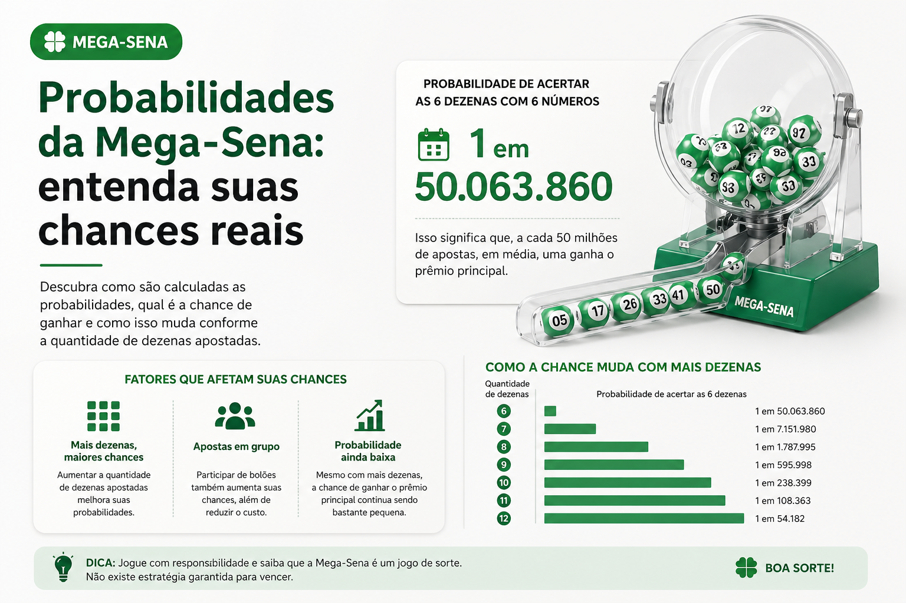

Probabilidades da Mega-Sena: entenda suas chances reais
Muitas pessoas jogam na Mega-Sena pensando principalmente no prêmio principal, mas entender as probabilidades ajuda a enxergar o jogo com mais clareza. Saber quais são as chances estatísticas de acerto é uma forma de interpretar melhor a aposta e evitar expectativas irreais.
Neste artigo, você vai entender como funciona a probabilidade na Mega-Sena, o que muda quando o jogador escolhe mais dezenas e por que esses números são importantes para quem deseja analisar a loteria de forma mais consciente.

O que significa probabilidade na Mega-Sena
Probabilidade é a relação entre o número de resultados possíveis e a quantidade de combinações que podem levar ao acerto. No caso da Mega-Sena, como o jogador escolhe números entre 01 e 60, a quantidade de combinações possíveis é muito alta.
Isso explica por que acertar os 6 números sorteados é estatisticamente tão difícil. A probabilidade não serve para prever o próximo resultado, mas ajuda a entender o tamanho do desafio envolvido em cada concurso.
Qual é a chance na aposta simples
Em uma aposta simples, com 6 dezenas, a chance de acertar a Sena é de 1 em 50.063.860. Esse é o cenário mais básico da loteria e também o mais conhecido pelo público.
Embora o número seja muito alto, ele é importante porque mostra de forma objetiva como o prêmio principal está ligado a uma chance extremamente baixa de acerto.
O que muda ao apostar mais dezenas
Quando o jogador escolhe mais de 6 números, a aposta passa a cobrir uma quantidade maior de combinações internas. Isso melhora as chances matemáticas de acerto, porque mais cenários ficam incluídos dentro do mesmo jogo.
Em contrapartida, o valor da aposta sobe de forma significativa. Ou seja, aumentar a quantidade de dezenas pode melhorar a probabilidade, mas também eleva o custo final da participação.
Maior chance não significa chance alta
Esse é um ponto importante. Mesmo quando o jogador escolhe mais dezenas e melhora a probabilidade, isso não significa que a chance de acertar a Sena se torna alta. O prêmio principal continua estatisticamente improvável.
Entender essa diferença ajuda o usuário a ler os números com mais equilíbrio e a compreender que “melhorar a chance” não é o mesmo que “ter boa chance”.
Como interpretar esses números de forma útil
As probabilidades da Mega-Sena são úteis principalmente como informação de contexto. Elas ajudam a entender o funcionamento matemático da loteria, comparar tipos de aposta e analisar o jogo de forma mais racional.
Esse tipo de leitura também é valioso para conteúdos informativos, conferência de dados e consulta de concursos anteriores, porque reforça uma visão mais consciente sobre o tema.
Probabilidade não prevê resultado futuro
Um erro comum é imaginar que as probabilidades possam indicar quais números “devem sair” em concursos futuros. Isso não é correto. A probabilidade mostra a dificuldade estatística do acerto, mas não aponta quais dezenas serão sorteadas.
Da mesma forma, resultados passados e frequências históricas podem ser analisados como dado, mas não funcionam como garantia de comportamento futuro em um sorteio aleatório.
Conclusão
Conhecer as probabilidades da Mega-Sena é uma forma de interpretar o jogo com mais lucidez. Embora o prêmio principal seja o maior atrativo, entender as chances reais ajuda o usuário a analisar apostas, concursos e conteúdos relacionados com mais clareza.
Quanto melhor a compreensão sobre esses números, mais fácil se torna navegar por informações sobre a loteria sem criar expectativas distorcidas sobre resultados e acertos.